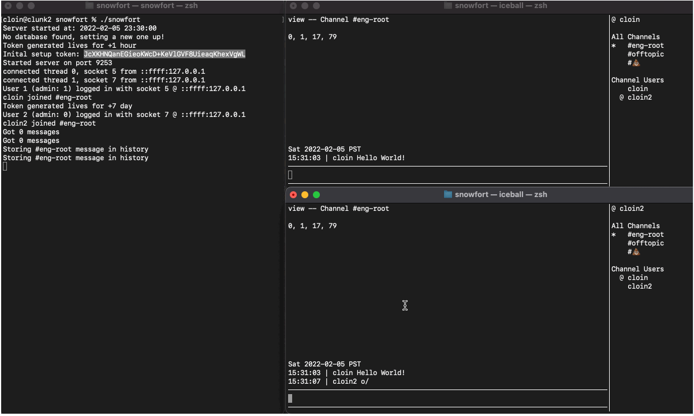
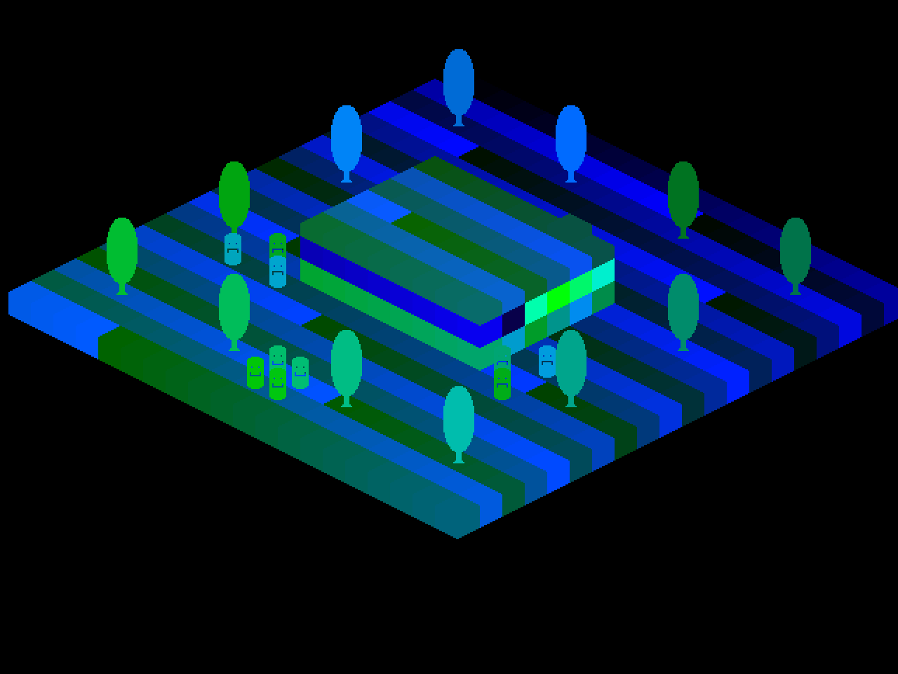
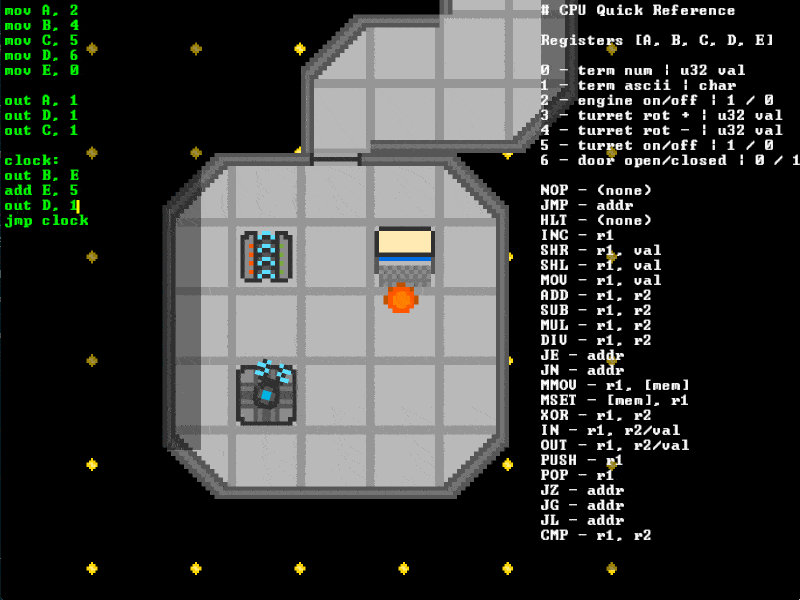

Github Portfolio
Github Portfolio
Skill Summary
- production experience with C, Rust, Go, and JS
- embedded/networking dev in kernel and userspace

Spall is an easy-to-learn chrome://tracing replacement. It supports the older JSON format, and a new custom binary format to squash the learning curve for existing profiler users, providing a transition path to a faster alternative when they're ready to integrate with the spall library directly. Spall's binary format allows much lower event capture overhead, and loads much faster into the tracing frontend. Spall is capable of loading very large JSON and binary files, ingesting about 500 MB of JSON in 10 seconds, dropping down to 1-2 seconds for the same file in binary form

Next steps for spall include a native version, enabling loads of much bigger trace files, faster, live data streaming to the profiler, and more in-depth, complex stats.
Debug is a learning exercise to understand DWARF and ELF better that turned into a real project. The intent of the project is to bring full-fat, quality GUI/TUI debugging, ala RemedyBG to Linux, with integrations for high-detail profiling, system-level eBPF latency measurements, and custom binary dissassembly integration for live network protocol debugging.

Debug is currently a work in progress, with short-term upcoming features including binary disassembly and support for simple C expressions
Snowfort is an experiment, designed to challenge the way interviews are done in the tech space. Snowfort was built to handle client implementations at several different steps in the web stack, testing candidate's abilities to write low-level network calls, or design a nice looking interface, according to intended position. Each candidate is provided with an appropriate client stub and RFC, they flesh it out and customize it, allowing them to flex their job-specific skills.
After completion, day-to-day engineering chat would be done via their own custom client, giving the tool and interview task some purpose and meaning. On job day one, every new onboardee has a great icebreaker showing off what they did with their client, and giving immediate traction to launch into internal dev workflow improvements, getting to know the team better in the process.
Q8 is an educational tool, designed to show the users a simplified view of what really goes on under the hood of their computer. Using a grid of tiles, it renders the state of the program in memory live, highlighting I/O operations as they occur. With a comprehensive suite of example programs, puzzles, and intro tutorials, users can quickly get a feel for working with a machine on one of the lowest levels, bytecode. Without the abstractions of higher-level languages or even assembly, it provides an interface to make low-level computing building blocks tractable.

Q8 provides only the most basic of operations, giving new users lots of runway to grow. Need multiplication? Discover the joys of writing it yourself using addition and a loop, and learn a lot about programming as you go.

Nolli is a tiny hobby kernel that runs on x86. It has a two stage bootloader that pulls it from the primordial 16 bit start state up to a slightly less archaic 32 bits, heroically saving the poor processor from the horrors of the segment registers.
As a learning project primarily, the kernel regularly suffers bouts of triple fault fever, getting better over time as I work out some of the nasty issues. It currently supports basic interrupts and catches some faults; It responds to keyboard input, page faults appropriately on invalid accesses, and can scan the pci bus for attached devices. Nolli can output over both serial and vga, using the BIOS configured VGA mmio at 0xB8000 to draw ascii symbols in various colors.
The bootloader is simple, using bios int calls to build a map of memory, load the kernel from disk, configure the gdt, and transition into 32 bit mode.
Rain's rendering engine positions and draws 2D tiles to give it a 2.5D isometric feel. In order to support camera rotation, the engine selects pre-made tiles from each tile type's palette. To simplify mouse detection while my grid placement and block size were still undetermined, I constructed a screenspace to worldspace map so that mouse clicks would map perfectly onto tile pixels, regardless of orientation.
Rain uses a breadth-first search pathfinder to move the player characters around the map. The player can then select enemies to attack, assuming the player characters can see them. To manage vision, each entity adds the surrounding circle of tiles into their team's visible tile list.

Zala is a side-project that I developed over a period of time after wanting to see a solid space programming game similar to Mojang's 0x10c. Zala has an in-game console and assembler, using an emulated CPU to process instructions. The player can open doors, fire turrets, and fly the ship with a simplified assembly language.
To support a live programming/runtime environment I had to encapsulate the emulator, running it at a fraction of the framerate and sending it a reset flag when new code was available. I created a little messaging system to report errors and CPU output back to the game.
As part of the game, I had to lay out a very simple set of assembly instructions, creating an easier, programmer friendly environment. The assembler allowed for jumping to labels and all the opcodes had one distinct function.
Snow was an experiment into procedural terrain generation and 3D rendering using OpenGL. While learning to render tons of 3D models each frame, I picked through several techniques, trying to get the smoothest framerate for the largest visible number of voxels. I tried using the CPU to create a mesh containing only the visible faces of the terrain, but quickly discovered that doing that created a large amount of vertex processing on the component not designed to handle it. I found that instanced rendering of full cubes moved the vast majority of processing to the gpu instead, and the only work the cpu had to do was to compile a list of cube centers for the hulled mesh.

Using perlin noise, I rapidly generated interesting terrain for the player to explore. Interesting terrain gave me a strong reason to work on the hull meshing. I wanted more to explore and see from a distance.
One of the biggest issues with voxels, especially non-textured voxels, is the need to differentiate between flat surfaces and edges. I wrote an edge detector that processed vertices and applied lighting modifiers when appropriate, emulating ambient occlusion.